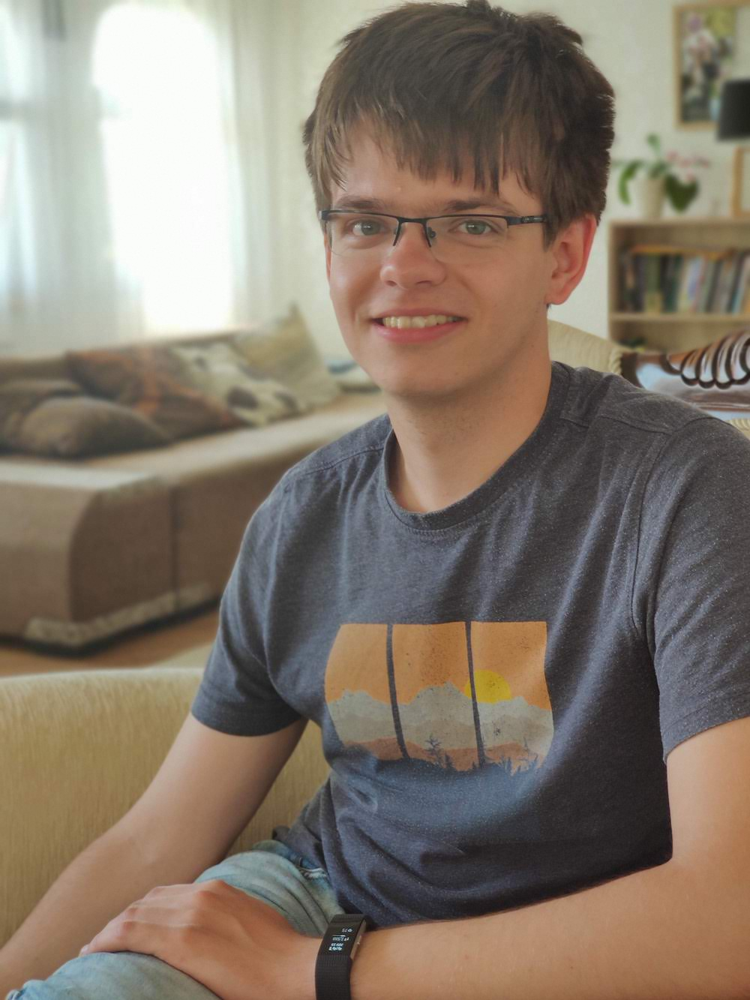

Rares-Darius Buhai
I am a PhD student at ETH Zurich, advised by Prof. David Steurer. I am interested in theoretical aspects of machine learning.
Contact me at rares dot buhai at inf dot ethz dot ch.
Education
- 2020-present: Ph.D., ETH Zurich, advised by Prof. David Steurer.
- 2019-2020: M.Eng., Massachusetts Institute of Technology, advised by Prof. Guy Bresler.
- 2015-2019: B.S., Massachusetts Institute of Technology.
Papers
- Learning Restricted Boltzmann Machines with Sparse Latent Variables.
Guy Bresler, Rares-Darius Buhai.
NeurIPS 2020.
- Empirical Study of the Benefits of Overparameterization in Learning Latent Variable Models.
Rares-Darius Buhai, Yoni Halpern, Yoon Kim, Andrej Risteski, David Sontag.
ICML 2020.
- Human-Aware Robotic Assistant for Collaborative Assembly: Integrating Human Motion Prediction With Planning in Time
Vaibvah V. Unhelkar, Przemyslaw A. Lasota, Quirin Tyroller, Rares-Darius Buhai, Laurie Marceau, Barbara Deml, Julie A. Shah.
IEEE Robotics and Automation Letters, 2018.
Teaching
- 2020, spring semester: TA for Introduction to Probability (6.041), Massachusetts Institute of Technology.
- 2019, fall semester: TA for Machine Learning (6.867), Massachusetts Institute of Technology.